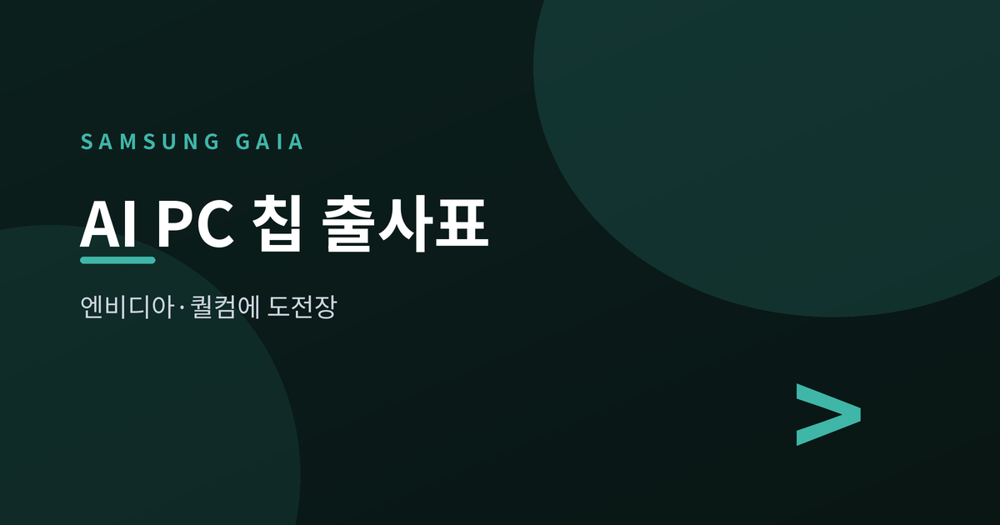
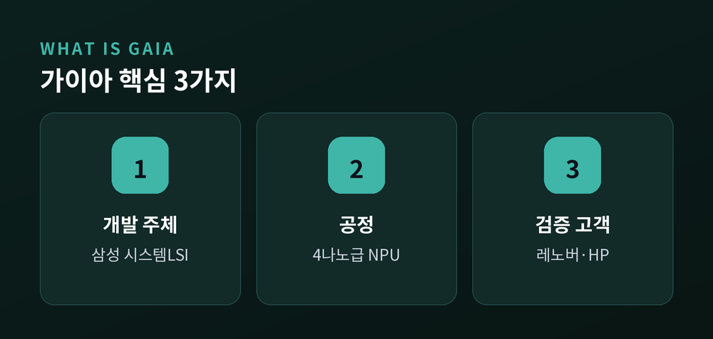
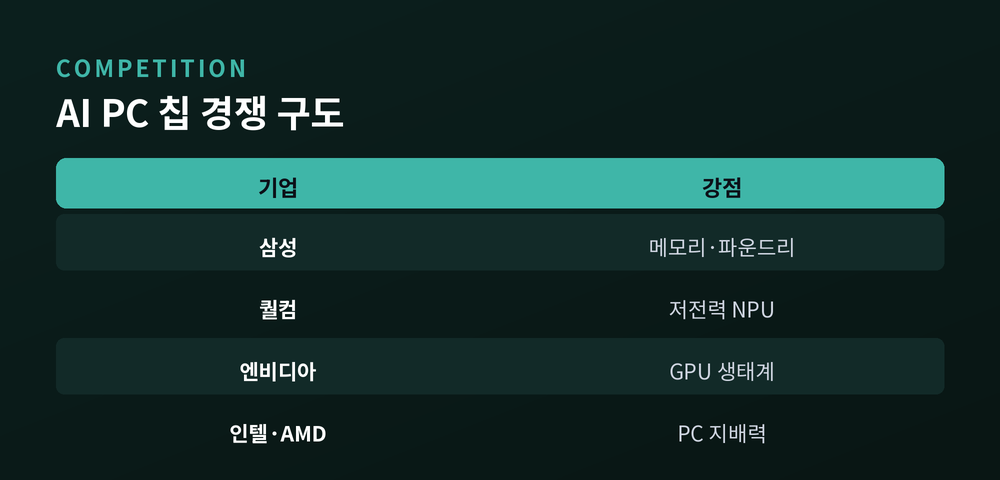
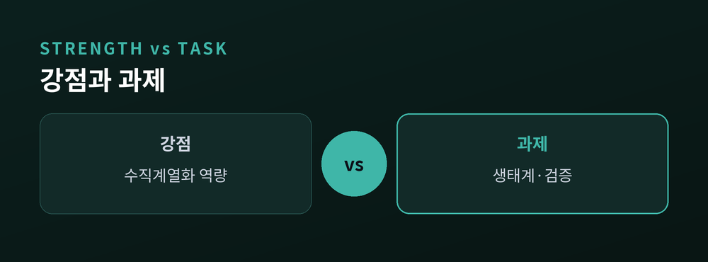
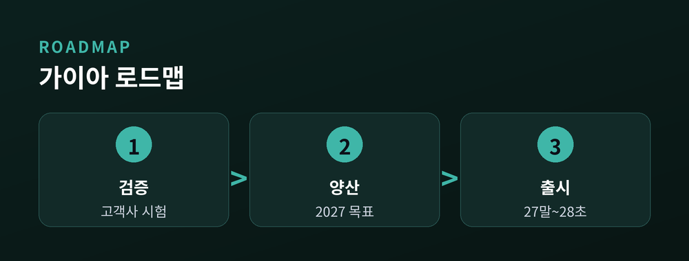

엔비디아·퀄컴에 던진 도전장
핵심을 먼저 세 줄로 정리합니다.
첫째, 삼성전자가 AI PC용 AI 가속기 '가이아(GAIA)'를 개발해 레노버·HP에서 성능 검증을 받고 있습니다.
둘째, 4나노 공정 기반이며 이르면 2027년 양산이 거론됩니다.
셋째, 상대는 엔비디아·퀄컴·인텔·AMD, 이미 시장을 증명한 강자들입니다.
이번 글에서는 2026년 7월 초 보도된 '가이아'가 무슨 일인지, 왜 중요한지, 앞으로 어떻게 될지를 차분히 짚어보겠습니다.

지난 7월 9일 전후, 국내외 매체가 한목소리로 전했습니다.
삼성전자 시스템LSI사업부가 AI PC용 칩 '가이아'를 개발하고 있다는 소식입니다.
가이아는 PC 안에서 생성형 AI 연산을 처리하는 전용 칩입니다.
범용 CPU나 GPU와 달리, AI 추론에 특화된 NPU 구조가 핵심입니다.
쉽게 말해 컴퓨터가 클라우드에 묻지 않고 스스로 AI를 돌리도록 돕는 '보조 두뇌'인 셈입니다.
공정은 4나노급입니다.
이미 시제품이 중국 레노버와 미국 HP에 공급돼 검증 단계에 있다고 전해졌습니다.
일부 해외 매체는 가이아가 CPU를 대체하는 완전한 PC 두뇌라기보다, CPU·GPU의 AI 작업을 덜어주는 전용 가속기에 가깝다고 정리했습니다.
성격을 정확히 구분해 두는 편이 좋겠습니다.
다만 짚어둘 점이 있습니다.
가이아의 구체적 연산 성능 수치는 아직 공개되지 않았습니다.
삼성의 공식 발표도 없습니다. 현재 보도는 업계 소식통과 시제품 공급 정황에 기반합니다.

배경에는 '온디바이스 AI'라는 큰 흐름이 있습니다.
클라우드 서버가 아니라 기기 안에서 직접 AI를 처리하는 방식입니다.
2024년이 AI PC의 태동기였다면, 2026년은 시장에 안착하는 해로 평가됩니다.
NPU를 쓰는 실사용 서비스가 늘고 있기 때문입니다.
삼성이 겨냥하는 시장 규모는 400조 원대로 거론됩니다.
경쟁자는 만만치 않습니다.
퀄컴은 80 TOPS급 NPU를 담은 스냅드래곤 X2 엘리트를 올 상반기 내놨습니다.
엔비디아는 지난 5월 차세대 PC용 칩을 공개하며 GPU 생태계로 앞서갑니다.
인텔은 하반기 '팬서레이크'로, AMD는 라이젠 AI로 맞섭니다.
삼성은 이 판에 후발주자로 들어섭니다.
먼저 온 이들이 이미 자리를 잡았다는 점은 부담입니다.
특히 엔비디아는 CUDA라는 개발자 생태계를, 퀄컴과 인텔은 윈도우 최적화를 이미 쥐고 있습니다.
칩의 성능만이 아니라, 그 칩을 쓰는 이유를 만들어야 하는 싸움입니다.

그럼에도 삼성이 쥔 패는 분명합니다.
메모리, 파운드리, 완제품을 모두 가진 회사입니다.
가이아는 엑시노스에 넣어온 NPU 설계 경험을 PC로 확장하는 시도입니다.
설계는 시스템LSI가, 생산은 삼성 파운드리가 맡는 내부 시너지가 있습니다.
여기에 자사 메모리를 결합하면 AI 컴퓨팅 흐름의 상당 부분을 수직계열화할 수 있습니다.
특히 메모리 안에서 연산하는 PIM 기술과의 결합을 모색 중입니다.
데이터 이동을 줄여 지연과 전력을 아끼는 차세대 방식입니다.
물론 그늘도 있습니다.
삼성은 2012년 엑시노스를 크롬북에 넣었지만, 인텔의 벽을 넘지 못하고 2년 만에 접었습니다.
하드웨어만으로는 부족합니다. 개발자 생태계와 소프트웨어 협력이 성패를 가릅니다.

일정부터 보겠습니다.
업계는 이르면 2027년 양산, 완제품 출시는 2027년 말~2028년 초로 봅니다.
레노버·HP의 실제 채택은 아직 확정되지 않았습니다.
성공한다면, 삼성은 메모리에 쏠린 구조에서 벗어나 시스템반도체 실적을 다변화할 발판을 얻습니다.
반대로 지연되거나 생태계에서 밀린다면, 2012년의 기억이 되풀이될 수 있습니다.
지켜볼 지점은 넷입니다.
실제 성능 공개, 고객사 정식 채택, PIM 결합의 실효성, 그리고 양산 일정 준수입니다.

정리하면 이렇습니다.
'가이아'는 아직 출발선에 선 도전입니다. 화려한 스펙보다 냉정한 검증이 먼저입니다.
— 무기는 충분합니다. 남은 것은 이 무기를 실제 경쟁력으로 바꿔낼 수 있느냐입니다.
삼성이 이번에는 인텔의 벽 대신 자신의 벽을 넘을 수 있을지, 2027년의 답을 기다려 봅니다.
참고 소스